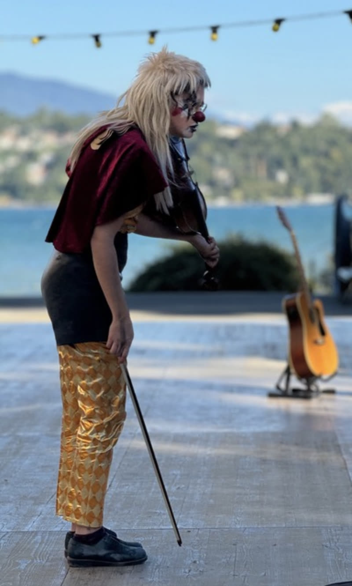
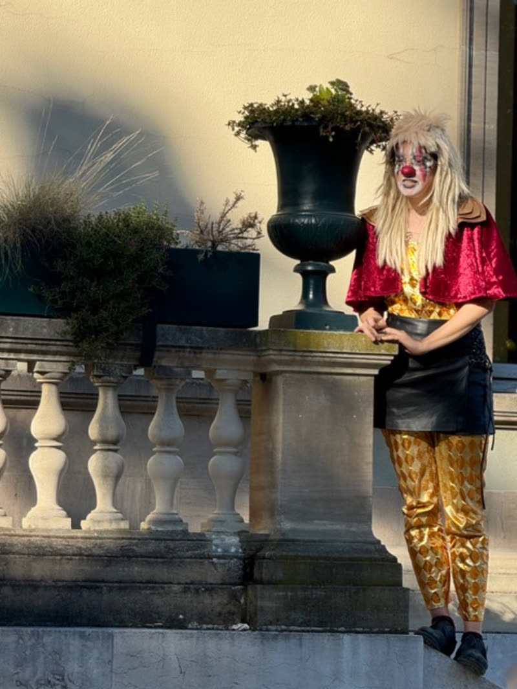

La Compagnie
La cie Clouks c'est le gloups du vide et du doute, le clac de la précision et de l'élan — le tout sans signification précise, car le sens vient beaucoup d'ailleurs que des mots.
Un théâtre engagé,
poétique et vivant
Cette jeune compagnie de théâtre physique et musical est nourrie par le clown, le jeu masqué et le bouffon. Un brin absurde, poétique et vivant, pensé pour rassembler et créer des émotions, des évocations et quelques réflexions.
Les onomatopées vont bon train : elles disent ce que les mots manquent, et laissent au corps le soin du reste.


Artiste récurrente
Clara Urio
Jeu & Écriture
Jeune artiste pluridisciplinaire, Clara s'est formée à l'école de théâtre physique Lassaâd à Bruxelles (2021–2023). Titulaire d'un Bachelor en littérature et anthropologie à l'Université de Neuchâtel (2021), elle nourrit son travail d'une réflexion sur les comportements humains et les dynamiques sociales.
Elle se perfectionne dans le clown et le bouffon auprès d'Hélène Vieilletoile, de Gabriel Chamé et de Fred Robbe, et explore le jeu masqué avec Omar Porras. Depuis 2023, elle expérimente le clown en solo, sur scène et dans l'espace public.
Musicienne dès l'enfance, Clara a étudié le violon au Conservatoire Populaire de Genève. Ce bagage nourrit ses collaborations scéniques, notamment dans Un beau jour (création 2023) ou dans Hapax ou la Comparution immédiate (Festival de la Bâtie 2025), où elle est à la fois musicienne et comédienne.
Le comité
- Eléonore GürPrésidente
- Lucie MintenTrésorière
- Alice ArifSecrétaire
Galerie
Sur scène
et dans la rue
Contact
Travaillons
ensemble
Pour des dates, des collaborations ou toute question sur la compagnie.
contact@cieclouks.ch +41 78 708 89 82Genève, Suisse